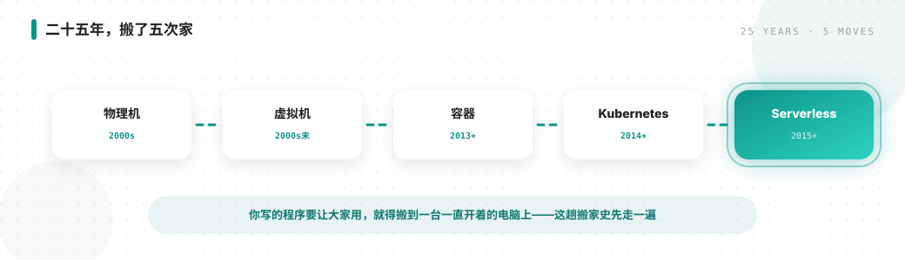
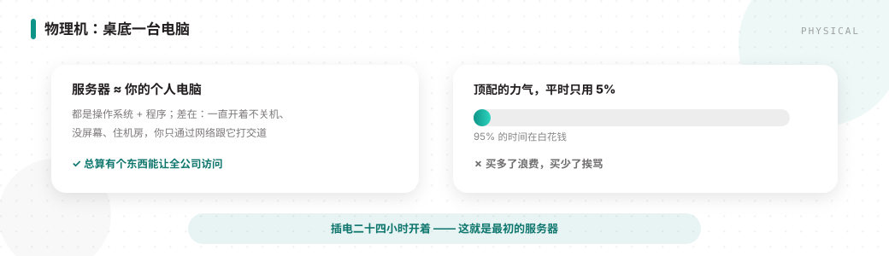
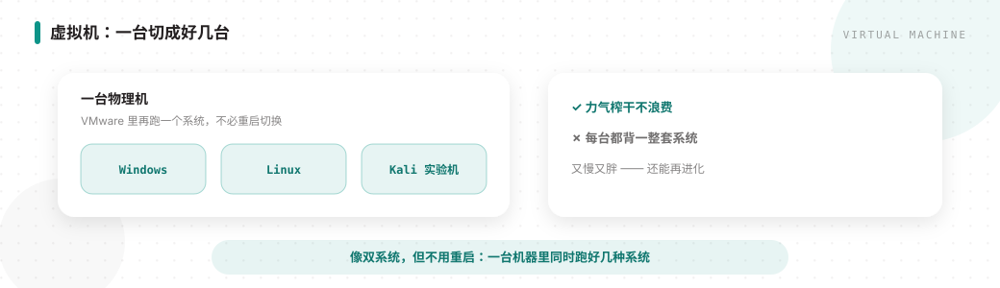
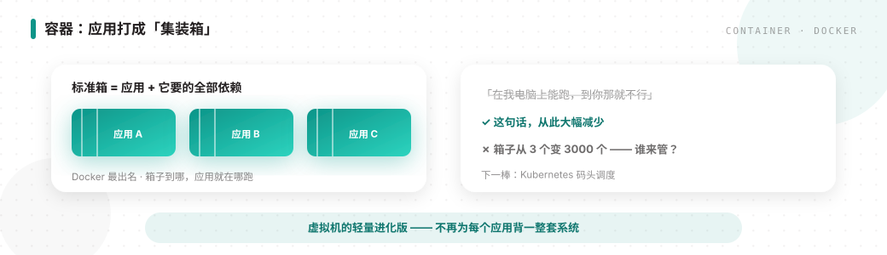
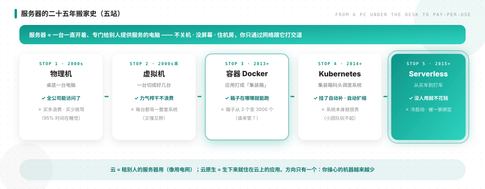
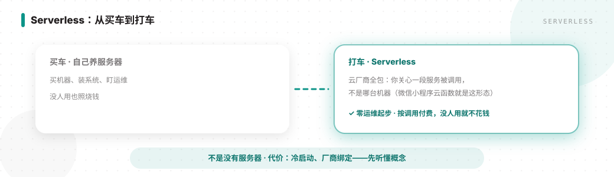
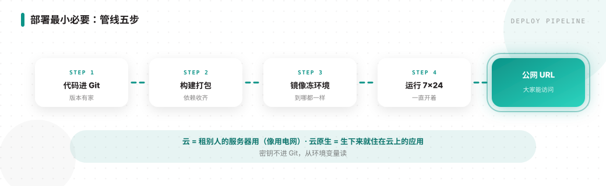
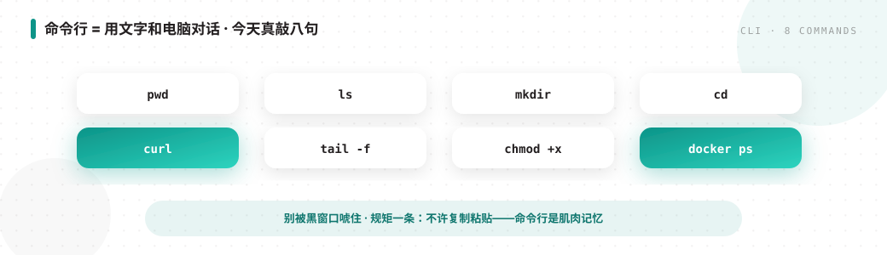
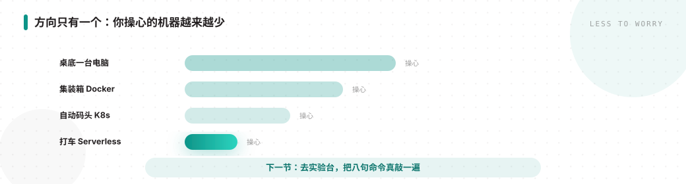

同学们，上节课呢，咱们讲了软件是怎么开发出来的——流程啊，还有需求调研。这节课呢，浅讲一下服务器与云原生。你写的程序要让大家用，就得搬到一台一直开着呢的电脑上，对吧。这台电脑，二十五年搬了五次家。咱们先把这趟搬家史走一遍。

先说第一站，物理机。最早呢，公司自己买一台电脑，塞桌底或者小机房，插电二十四小时开着。解决了什么？总算有个东西能让全公司访问了嘛。可它又带来麻烦：顶配机器平时可能只用百分之五的力气，百分之九十五白花钱；活动一来又不够——买多了浪费，买少了挨骂，对吧。所以啊，服务器严格意义上跟你的个人电脑差不多，都是操作系统加程序；不严格意义上，差在系统不一样、一直开着不关机…

第二站呢，是虚拟机。很多同学听过双系统：一台电脑装 Windows 又装 Linux，开机选一个。更省事的做法呢，是装个 VMware，在 Windows 里面再跑一个 Linux，甚至跑 Kali 这类安全实验系统——不必重启切换，对吧。一台物理机里跑多种系统，这就叫虚拟机。早期常见是软件虚拟化；现在更多是底层拆分出来的虚拟机，性能已经能接近物理机，但仍略…

第三站，容器。去过宁波港的同学可能见过，码头上一排排大型集装箱。早期没箱子的时候呢，货直接堆上船，到岸拆不清、分不清——乱套。后来变成一个企业一个集装箱，物流就顺了。软件里也一样：把应用装进标准箱子，箱子到哪，应用就在哪跑。Docker 最出名。「在我电脑上能跑，到你那就不行」这句话，从此大幅减少，对吧。可以看成虚拟机的轻量进化版——不再为每个应用背一整套系…

第四站，Kubernetes，简称 K8s。几千个集装箱怎么管？靠人站码头记账不行嘛。海运侧有自动化把箱子搬到对应船上；软件侧对应物呢，就是以 K8s 为代表的容器编排引擎。谁挂了补一个，流量大了多开，小了关掉。容器只是它最底层的一块砖；流量、存储、内部调用这些，平台统一管。解决了什么？几千个容器也能自动管好。又带来什么？这套系统本身很复杂——养懂 K8s …

第五站呢，是 Serverless，无服务器。名字有点唬人——不是真没服务器，是云厂商全包了；你关心的是一段服务被调用，不是哪台机器。你可能见过微信小程序的云函数——就是一种形态，常见用 Node.js。它是以服务为粒度，不是以整台机为粒度。好处呢，零运维起步、按调用付费，没人用就不花钱。坏处呢，有冷启动、厂商绑定；传统企业内部系统未必先碰它——先听懂概念就…

好，把五站连起来，一句话记住：云，就是租别人的服务器用，像用电网，不自己发电；云原生呢，就是打娘胎里就按云的方式设计的应用——一出生就装成集装箱、就接受调度、就能按量扩展，而不是半路从桌底搬上来的老系统。再补部署最小必要：管线五步——代码进 Git、构建打包、镜像冻环境、运行七乘二十四、访问拿公网 URL。密钥不进 Git，从环境变量读。V1.0 验收口径是…

服务器没屏幕、住机房——你摸不到鼠标，只能通过网络发文字过去，这行文字就是命令，对吧。别被黑窗口唬住：命令行只是用文字和电脑对话。今天 Lab 要真敲八句：pwd、ls、mkdir、cd、curl、tail -f、chmod +x、还有 docker ps。规矩一条：不许复制粘贴——命令行是肌肉记忆。卡住了查资源区的命令手册就行。

好，本节小课就到这里了，收个尾。从桌底一台电脑，到集装箱，再到自动码头和打车式的 Serverless——方向只有一个：让你操心的机器越来越少。下一节咱们动手，去实验台把这八句真敲一遍。
